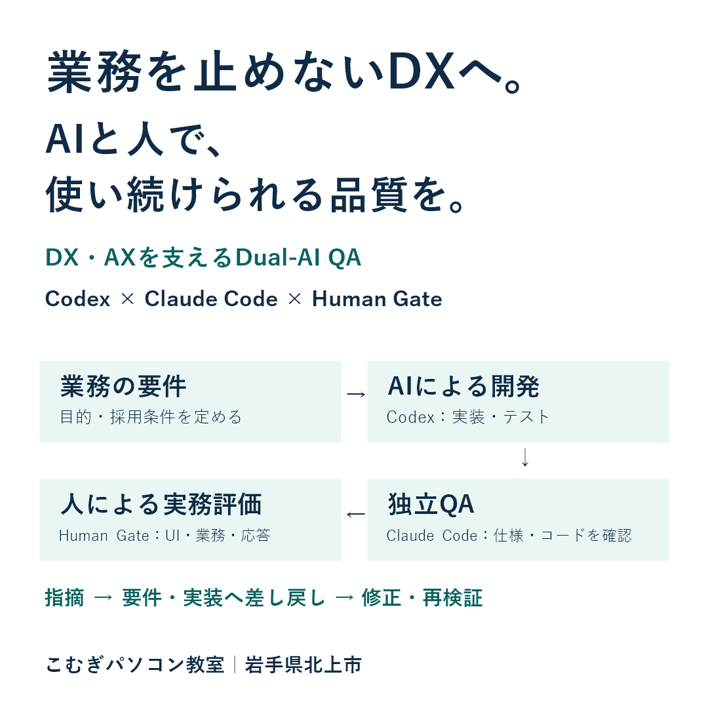

SNS共有用画像・実証事例・技術者向けQAサンプル
業務改善と継続運用へ向けた品質検証を伝える
「業務を止めないDXへ。AIと人で、使い続けられる品質を。」を伝えるSNS共有用画像と、こむぎパソコン教室（岩手県北上市）の実証事例・最小QAサンプルをまとめました。現場の要件、ローカル環境での実装、独立QA、人によるUI・業務評価、修正・再検証の関係を紹介する素材です。
制作・公開・更新日：2026年11月23日。実証の集計・品質判断の基準は2026年11月22日、参照コミット 47d8208 の公開済み記録です。無停止稼働や長期安定運用を達成した実績図ではなく、継続運用を支えるための品質検証プロセスを示します。業務時間削減・教育効果は未測定で、今回の編集・素材制作は新たな製品試験ではありません。
技術実証レポート ／ プレスリリース ／ Issue #1〜#8の公開根拠
SNS共有用画像



正方形画像はX・Threads・Instagramの通常の画像投稿用です。横長画像はWebページのリンク共有用で、ページのOGP・Xカードからも参照します。正方形を切り抜くのではなく、それぞれの比率に合わせて配置しています。
画像は「業務の要件」「AIによる開発」「独立QA」「人による実務評価」と、指摘を修正・再検証へ戻す流れを表しています。Human Gateは現場担当者が業務・UI・応答を評価して差し戻す工程で、最後の一度だけの承認ではありません。
正方形1080×1080：投稿用PNG ／ 互換用JPEG ／ 編集用SVG
文言・配置の設定は dx-social.json、再生成コードは render-dx-social.ps1 です。更新手順に沿ってPNG・JPEG・SVGを同じ内容で更新できます。SNSへの実投稿や各社の表示・キャッシュ更新は、サイトと素材の公開確認とは別です。
テストはPASS。講師の判定は、不合格だった。

講師は「120文字で提案してください。」と依頼しましたが、当時のAIは「文章の長さは120文字程度にしますか？」と確認し直す場面がありました。講師は教育品質として不合格と判断。会話履歴の修正、Mistralの品質評価、候補Gemmaの比較、Claude Codeの独立ブラインドQA、Issue #8の再修正へつながりました。
業務で使い続けるために、なぜ人の実務評価が必要なのかを説明する事例です。この比較画像は実際のアプリ画面のキャプチャではなく、公開した実証記録に基づく再現です。修正後のMistral評価では文章依頼12回すべてに本文を返していますが、文字数や別案などの課題が残りました。当初の観察と修正後の結果を同一視しないでください。
記録上の通常モデルはMistral、Gemmaは正式採用していません。Issue #8のコードQAは合格しましたが、修正後の実AI応答品質は再検証待ちです。コードQA合格と、応答品質・実務上の受入合格を分けて紹介します。

技術者向け：外部APIなしの最小QAサンプル
完全な架空データで、先行評価の固定、評価者へ渡す情報の限定、入力のハッシュ照合、評価差の比較を実行できます。CodexとClaude Codeの役割を説明するための固定された模擬評価です。実際のCodex・Claude CodeやLLMは呼びません。新たな独立監査を実施したという意味ではありません。
node examples/blind-qa/demo.mjs
node --test examples/blind-qa/workflow.test.mjs依存関係はNode.jsの標準ライブラリだけです。APIキーやnpmパッケージのインストールは不要です。詳しい再現範囲・未再現の範囲はサンプルREADMEをご確認ください。
根拠と制作・検証の範囲
実例と経緯は公開用Issue経緯資料から構成しました。非公開の製品コード、生ログ、受講生データ、秘密情報は追加していません。QAサンプルの入力・評価は教材用の創作で、上記実例の記録とは分けています。
成果物の別担当レビュー、サンプルの実行テスト、公開ファイルの確認結果は検証記録に記載します。この制作・検証を既存のテスト件数、独立QA回数、実AI通信回数に加算していません。
発信：こむぎパソコン教室｜岩手県北上市。公式サイト・お問い合わせ